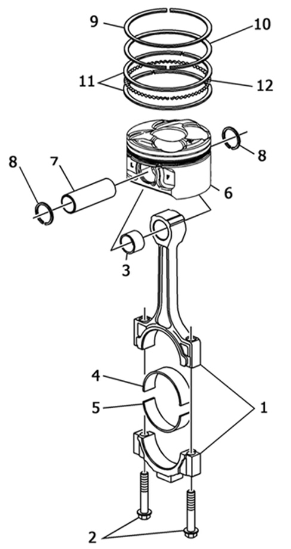

INTRODUCTION - PISTONS AND CONNECTING RODS
- Path
- Descriptions > 10 ENGINE > 1028 PISTONS AND CONNECTING RODS > INTRODUCTION - PISTONS AND CONNECTING RODS
- Kind
- system description
- Applies to
- engines: 3.2 JTS; all production periods
- Interactive page
- https://sloeber94.github.io/elrnDB-aBrrSpdr/en/#/946001170
Applies to: engines: 3.2 JTS; all production periods
Specifications
The pistons are produced through aluminium alloy fusion, whilst the connecting rods are made from steel.
The gudgeon pin is the floating type and works inside the bush inserted in the small end and is kept in place by two circlips.
The pistons have impressions for the valves and the combustion chamber in the crown; they are cooled at the bottom by an oil jet.
The compression seal is ensured by two bands, whilst there is a third band with three seals for the oil seal, one upper seal and one lower seal with an oil scraper ring in between.

1. connecting rod and cap
2. bolts fixing connecting rod cap
3. small end bush
4. upper connecting rod half-bearing
5. lower connecting rod half-bearing
6. piston
7. gudgeon pin
8. circlip
9. upper band (compression)
10. lower band (compression)
11. oil seals
12. oil scraper ring